Reunión bajo Ley 20.730 de Lobby
Del exceso de datos a la trazabilidad regulatoria
Inteligencia operacional para infraestructura energética crítica. Ver el sistema. Entender la señal. Predecir el riesgo. Actuar con confianza.
| Audiencia | Superintendencia de Electricidad y Combustibles |
| Materia | Estandarización y trazabilidad de información operacional |
| Expone | Quorelia SpA · Santiago, Chile |
01 · El contexto
Hoy no hay escasez de datos.
Hay un exceso.
El Sistema Eléctrico Nacional alcanza 38.616 MW de potencia neta instalada y crece a un ritmo que ninguna revisión manual puede seguir. Las renovables no convencionales suman 20.223 MW, el 52,4% de la matriz. La fotovoltaica sola aporta 12.438 MW en 757 unidades — es la tecnología más numerosa y la peor documentada del registro.
38.616
MW de potencia neta instalada en el SEN · julio 2026
20.223
MW de ERNC — 52,4% de la matriz
12.438
MW de solar fotovoltaica — 32,2%, la mayor tecnología
2.029
centrales en el registro nacional, de 1.614 titulares distintos
El cuello de botella no está en terreno
Según la Cuenta Pública 2026 de la SEC, en generación distribuida se ejecutaron 2.341 fiscalizaciones durante 2025: 2.100 fueron revisiones documentales y 241 en terreno. Cerca del 90% del esfuerzo del segmento consiste en leer documentos que llegan en formatos definidos por cada titular, sin una cadena que permita reproducir la cifra informada.
Fuentes: CNE, Reporte de Capacidad Instalada de Generación, julio 2026 — potencia neta de unidades en operación; Infotécnica del Coordinador, extracción del 16 de agosto de 2026 (centrales y titulares); Cuenta Pública 2026 de la SEC (fiscalizaciones, gestión 2025).
02 · Evidencia sobre el registro público
Cuatro hallazgos que nadie ha puesto sobre la mesa
Análisis propio sobre la totalidad del registro de Infotécnica: 2.618 unidades generadoras en 2.029 centrales. Reproducible desde los archivos de origen. Sin datos simulados.
Estructura
91,7% opera una sola central
De 1.614 titulares, solo 37 operan cuatro o más. Exigir un formato más estricto a un parque monoactivo no produce mejor información.
Documentación
23,1% de completitud
La ficha solar coordinada es la menos completa del registro — en la tecnología que concentra 1.375 de las 2.029 centrales.
Almacenamiento
2 de 977 unidades PMGD
Las otras 975 consignan «no aplica» en los 31 campos, justo cuando el nuevo marco lo incorpora con exigencias de monitoreo.
Calidad de dato
3 errores en 2 fichas
Vocabulario divergente, un rango de SOC de [0%–100%] que ningún BMS permite, y «En Pruebas» dentro de un campo de fecha.
La ventana es ahora
Definir el formato de reporte de almacenamiento es trivial con dos registros. Con trescientos, y vocabularios ya consolidados, deja de serlo.
Salvedad metodológica: parte de los campos vacíos puede ser legítimamente no aplicable a una instalación concreta. Es una medida de información estructurada disponible para análisis automatizado, no un hallazgo de incumplimiento de los titulares.
03 · Marco de trabajo
Velocidad Adaptativa
Siete etapas encadenadas que convierten señal cruda en cambio sostenido. No es una metodología abstracta: cada etapa define qué se mide y qué se declara cuando no se puede medir.
01
Sensar
Detectar señales relevantes del entorno en tiempo real, sobre los sistemas ya instalados.
02
Seleccionar
Priorizar lo crítico entre muchas opciones posibles.
03
Traducir
Convertir señales en criterio y en lenguaje que una persona pueda usar.
04
Experimentar
Probar de forma repetida y validar con evidencia temprana.
05
Transformar
Rediseñar procesos y modelos para escalar el impacto.
06
Institucionalizar
Alinear incentivos, gobernanza y cultura para sostener el cambio.
07
Aprender
Capturar conocimiento y mejorar el sistema de forma continua.
Ciclo de valor
Contexto→
Decisión→
Acción→
Dato→
Aprendizaje
Equivalente cognitivo
Observe→
Reason→
Act→
Learn
04 · Arquitectura
Primero la base de datos. Después la inteligencia artificial.
Ninguna capa de IA corrige un dato mal ingerido. Por eso la cadena de auditoría es el producto, y el modelo va después.
Capa 1 · Un solo camino desde el sensor hasta la cifra firmada
Entrada
SCADA · PPC · BMSLos sistemas propios del titular. No se reemplaza nada.
→
/01
IngestaUna cadencia de 300 s, una marca de tiempo, un sistema de unidades.
→
/02
ValidaciónVacíos, canales congelados, valores fuera de rango y deriva de reloj.
→
/03 · en paralelo
Cálculo de KPIDisponibilidad, factor de planta, eficiencia de ciclo, vertimiento.
Motor de calidadCobertura, número de muestras y cierre de ciclo contra umbral.
→
/04
Motor de verificaciónLa compuerta. Lo que no cumple no se publica: se publica la razón.
→
/05 · salidas
TableroPortal del cliente · vista regulatoria
ReporteríaPDF · Excel · correo, diaria y mensual
Se conservan las tres cosas — la medición cruda, el resultado calculado con su fórmula, y la cadena de procedencia que une una con otra. Por eso cada cifra puede recorrerse hacia atrás hasta la medición que la produjo. Capa 2, posterior: imágenes satelitales y modelos para monitorear desempeño y optimizar mantenimiento — siempre sobre el manifiesto ya verificado, nunca sobre el dato crudo.
Honestidad por diseño
El motor de verificación deduplica el catálogo de equipos antes de calcular — un rack publicado en dos protocolos duplicaría la energía e inflaría la eficiencia por sobre 100%. Si dos vías de cálculo independientes no coinciden, la publicación se bloquea. Si la cobertura no alcanza el umbral, la cifra se retiene y se declara la causa: el silencio de un canal nunca se informa como cero.
05 · Madurez
De agente potencial a agente confiable
La confianza no se declara: se construye demostrando que el sistema se detiene cuando no puede sustentar lo que dice.
Agente potencial→
Agente utilizable→
Agente confiable
Curva de adopción
01
Adopción
Conectar el activo y producir el primer informe verificable sin alterar la operación.
02
Complejidad
Incorporar tecnologías y regímenes distintos bajo las mismas reglas de validez.
03
Creación
Generar criterio nuevo: atribución recurso-activo, hallazgos con responsable.
04
Profundización
Institucionalizar el formato hasta que comparar activos distintos sea directo.
Escalar deja de ser el problema
Una vez definidos y validados los parámetros, replicar el sistema a un activo nuevo es un ejercicio de configuración, no de desarrollo. El costo está en definir bien la primera vez.
06 · Gobernanza
Soberanía del dato e infraestructura propia
La información operacional de una central es sensible y en muchos casos estratégica. Operamos servidor propio para mantener el dato bajo control estricto de extremo a extremo.
01
Menos movimiento de datos
Cada traslado entre nubes y terceros es una superficie de exposición adicional. Procesar donde el dato ya está reduce ese riesgo por diseño.
02
Más control y trazabilidad
Todo incidente sigue una traza auditable: detección, notificación, acción y resolución, con registro de quién consultó qué y cuándo.
03
Inferencia en entorno propio
Los modelos se ejecutan dentro de nuestra infraestructura. El dato de planta no sale del perímetro para ser interpretado.
Sobre certificaciones
Lo anterior describe decisiones de arquitectura, no acreditaciones de terceros. Quorelia no declara certificaciones ni cumplimiento normativo que no hayan sido auditados y emitidos por un organismo competente.
07 · Impacto sistémico
Qué cambia cuando la cifra es verificable
| Dimensión | Situación actual | Con información verificable |
|---|
| Fiscalización | 90% del esfuerzo del segmento en revisión documental de formatos heterogéneos | Priorización por riesgo objetivo; la revisión de lo conforme se automatiza |
| Localización de falla | El problema se detecta cuando ya afectó la generación | Se identifica el equipo o módulo que se desvía, con su evidencia |
| Pérdida de ingreso | Indisponibilidad detectada tarde y difícil de atribuir | Separación explícita entre recurso, activo y limitación sistémica |
| Huella de carbono | Intervenciones en terreno por rotación o denuncia | Menos desplazamientos: se va donde hay evidencia de problema |
| Conocimiento | Criterio concentrado en pocos equipos con capacidad analítica | Formato común que democratiza la lectura técnica del desempeño |
Sobre las magnitudes
Deliberadamente no proyectamos cifras de ahorro. Sería fácil presentar un porcentaje optimista de reducción de tiempo o de pérdida evitada. Preferimos que esos números los produzca un piloto y los mida el propio equipo revisor de la autoridad.
08 · Propuesta
Un piloto acotado, medible y sin riesgo institucional
No requiere modificación normativa, ni instalación de equipamiento, ni acceso a sistemas de la autoridad. Corre sobre datos que las centrales ya generan.
| Elemento | Definición |
|---|
| Alcance | 10 a 15 centrales voluntarias: fotovoltaica coordinada, PMGD y al menos una con almacenamiento |
| Duración | Tres meses, en paralelo al reporte habitual. No reemplaza ningún proceso vigente |
| Insumo | Datos SCADA existentes, con autorización expresa de cada titular |
| Producto | Informe estandarizado por central y vista consolidada de cartera, con trazabilidad por cifra |
| Métrica de éxito | Tiempo de revisión documental, medido con cronómetro por el equipo revisor de la autoridad |
| Definición de fracaso | Si el tiempo de revisión no disminuye de forma medible, el piloto se declara sin éxito y termina |
Quorelia es una empresa privada de tecnología. No es un sistema oficial de la SEC ni de ningún organismo del Estado, no ejerce funciones fiscalizadoras, no emite certificaciones con efecto regulatorio y no sustituye ningún procedimiento vigente.
09 · Valor para la autoridad
Cuatro capacidades que hoy no existen en el expediente
Ninguna requiere modificación normativa ni acceso a sistemas de la SEC. Todas operan sobre datos que los titulares ya generan y autorizan.
Due diligence técnica documental
Del PDF que se reconstruye al expediente que se verifica
Cada instalación entrega un expediente estandarizado donde toda cifra conserva su cadena hasta la medición. El revisor deja de rearmar planillas y pasa a contrastar — continuo, no anual.
Priorización por riesgo objetivo
Que cada visita a terreno valga más
Con 241 visitas frente a miles de instalaciones, el criterio hoy es denuncia o rotación. Una señal homogénea de calidad de dato y desviación sostenida permite ordenar la cola por riesgo, no por azar.
Trazabilidad probatoria
Evidencia que resiste la impugnación
Un procedimiento sancionatorio se sostiene sobre su prueba. Una cifra reproducible hasta la medición cruda sobrevive reposición y contencioso; una cifra de origen indeterminado, no siempre.
Formato BESS · aporte sin costo
Definir el estándar mientras aún es trivial
Hoy existen 2 fichas de almacenamiento; pronto serán cientos, con vocabularios ya consolidados. Ofrecemos la especificación abierta del formato de reporte BESS como insumo técnico gratuito, sin compromiso comercial.
Los informes de Quorelia son insumo documental verificable: no constituyen acto administrativo ni sustituyen el juicio del fiscalizador. La interpretación y la decisión son siempre de la autoridad.
10 · Cierre
Si el dato no sostiene la cifra, no la estimamos.
La declaramos.
Una cifra retenida con su razón declarada es verificable. Una cifra estimada que aparenta certeza no lo es. Esa distinción es todo el producto.

Inteligencia para infraestructura energética crítica
Solicitamos una sesión técnica de 45 minutos
jay@quorelia.org · quorelia.org